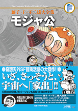

| |

定価1,785円（税込）
A5判／686ページ
好評発売中！
★は初めて単行本に収録される
作品です。
※収録内容は変更になる
場合があります。

|
＜週刊ぼくらマガジン＞
| 宇宙へ家出（1）（1969年1号） |
| 地球人はこわいよ（1969年3号） |
| うまそうな三人（1）（1969年4号） |
| うまそうな三人（2）（1969年5号） |
| さよなら411ボル（1970年1号） |
| 恐竜の星（1）（1970年2号） |
| 恐竜の星（2）（1970年3＋4合併号） |
| 恐竜の星（3）（1970年5号） |
| アステロイド・ラリー（1）（1970年6号） |
| アステロイド・ラリー（2）（1970年7号） |
| アステロイド・ラリー（3）（1970年8号） |
| ナイナイ星の仇討ち（1）（1970年9号） |
| ナイナイ星の仇討ち（2）（1970年10号） |
| ナイナイ星の仇討ち（3）（1970年11号） |
| ナイナイ星の仇討ち（4）（1970年12号） |
| ナイナイ星の仇討ち（5）（1970年13号） |
| 自殺集団（1）（1970年14号） |
| 自殺集団（2）（1970年15＋16合併号） |
| 自殺集団（3）（1970年17号） |
| 自殺集団（4）（1970年18号） |
| 自殺集団（5）（1970年19号） |
| 天国よいとこ（1）（1970年20号） |
| 天国よいとこ（2）（1970年21号） |
| 天国よいとこ（3）（1970年22号） |
| 天国よいとこ（4）（1970年23号） |
| 天国よいとこ（5）（1970年24号） |
| 天国よいとこ（6）（1970年25号） |
| 不死身のダンボコ（1）（1970年32号） |
| 不死身のダンボコ（2）（1970年33号） |
|
| 不死身のダンボコ（3）（1970年34号） |
| 不死身のダンボコ（4）（1970年35号） |
| 地球最後の日（1）（1970年26号） |
| 地球最後の日（2）（1970年27号） |
| 地球最後の日（3）（1970年28号） |
| 地球最後の日（4）（1970年29号） |
| 地球最後の日（5）（1970年30号） |
| 地球最後の日（6）（1970年31号） |
＜たのしい幼稚園＞
| 星のデパート（1970年1月号） |
| ねんどの星（1970年2月号） |
| 鳥にんげんの星（1970年3月号） |
| 恐竜がでた（1970年4月号） |
| たからの星（1970年4月増刊号） |
| つるつるの星（1970年5月号） |
| あべこべ星（1970年6月号） |
| ぐにゃぐにゃの星（1970年7月号） |
| 人が空をとべる星（1970年8月号） |
| 木が人をうえる星（1970年9月号） |
| ふしぎな水（1970年10月号） |
| 一本足の星（1970年11月号） |
| サンタの星!? （1970年12月号） |
＜特別収録＞
宇宙へ家出（1）
初出版 連載第1回 後半部
（1969年1号） |
| ★宇宙へ家出（2）連載第2回（1969年2号） |
| 地球最後の日（1）初出版 冒頭部（1970年26号） |
| 地球最後の日（6）初出版 結末部（1970年31号） |
|